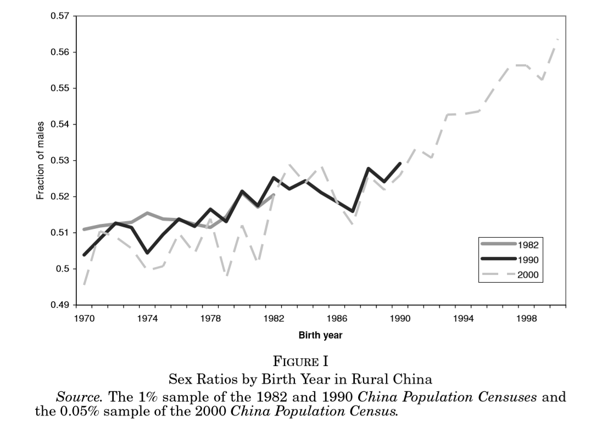
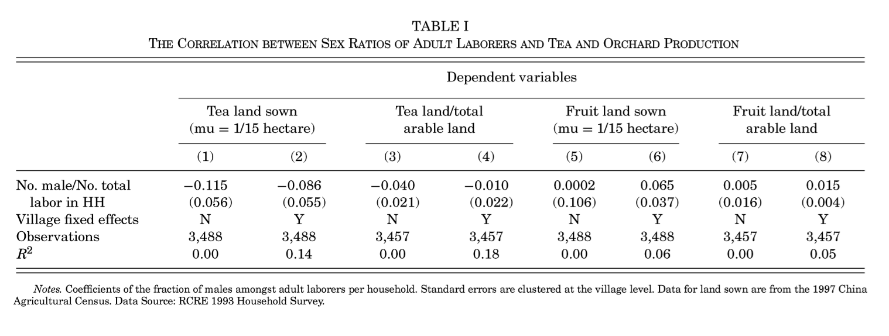
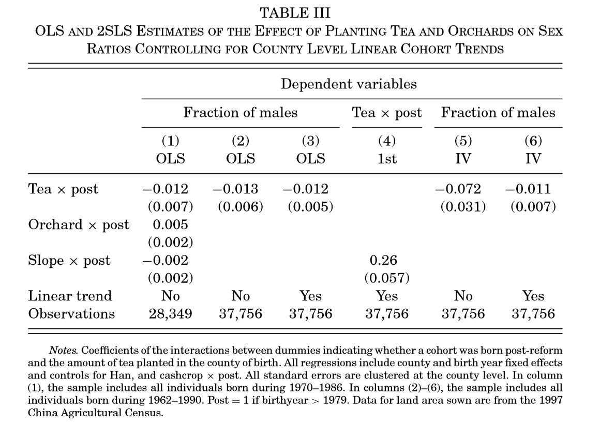
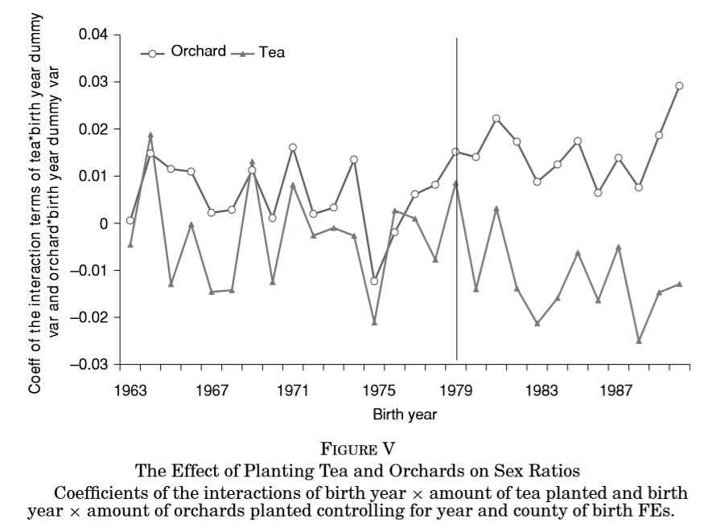
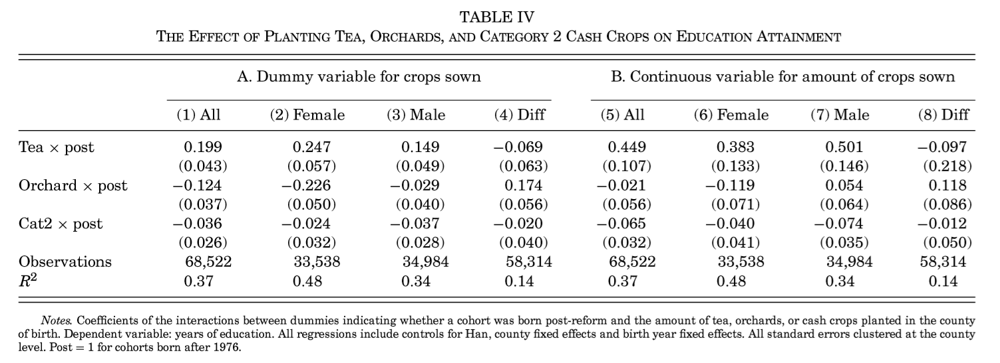

原文：Qian, N. (2008): “Missing Women and the Price of Tea in China: The Effect of Sex-Specific Earnings on Sex Imbalance,” Quarterly Journal of Economics, 123, 1251–85.
长期以来，经济学家认为发展中国家的性别不平衡问题是由这些国家潜在经济条件导致的。本文利用1978年之后中国农村地区的改革作为外生冲击，考察农业改革后，不同性别之间相对收入的变化对于不同性别儿童的生存率和受教育水平的影响。结果表明，女性相对收入的增加会提高女孩的生存率，同时提高女孩和男孩的受教育年限；而男性相对收入的增加会降低女孩的生存率、降低女孩的受教育年限，但对男孩的受教育年限没有影响。
导论
在没有人为干预的情况下，婴儿的出生性别比会轻微地偏向男性，男女出生比约为105比100。随着年龄的增长，由于男性死亡率比女性高，男女在总人口中的比例会趋向相等。但现实世界的情况并非如此，许多地区男性在总人口中的比例要高于女性，阿玛蒂亚·森将这一现象命名为“消失的女性”（Missing Women）。以中国为例，男性在其同一年出生人口中的比例从1970年的51%增长到2000年的57%。这种性别不平衡可能由许多原因导致，包括基于性别选择的堕胎、疏于照看甚至杀婴。
本文主要研究女性相对收入的变化对男孩女孩相对比例的影响，但在那些女性有高收入的地区，女性之所以有高收入可能是由另外一些原因决定的。为了处理这类遗漏变量问题，本文用1978年后中国农村地区的两项改革作为外生冲击，运用DID方法来估计性别专属型收入的提高（茶叶价格和水果价格的上升）对男孩女孩比例变化的效应。
数据
本文使用1997年全国农业普查1%样本、1990年中国人口普查1%样本，密歇根大学中国数据中心GIS数据，按照出生年份和县对这些数据进行加总和匹配。样本中包括15个中国南方省份所辖的1621个县，1997全国农业普查中所有产茶的省份都包括在内。
人口数据
由于城乡的计划生育政策和市场改革的历程有差异，本文将样本限制为农业家庭。用于分析的样本为1990年在农村生活的、在1962-1990出生的个人。因为数据中没有个体出生地的信息，本文假设如果个体在一个县居住超过5年，那么这个县就是她的出生地。由于本文主要的研究对象，在1990年仍然是儿童，因此人口流动不会影响本文的结果。
本文实证策略是比较改革前后同龄人中男性比例的变化。本文要识别的是随着时间的变化，同龄人中男性比例的变化。性别比例变化中有两个效应，一是年龄效应：儿童死亡率的性别差异会导致更多的男孩出生，并且男孩更高的死亡率会导致男性比例随着年龄的增高而降低；二是同龄人效应：每一年出生的人群中，男孩的比例可能会逐年升高。图1表明每一年龄的男性比例是随着时间变化稳定的，因此横截面数据中的男性比例变化，可以被解释为随着时间变化，男性的比例在上升。
由于计划生育政策，可能存在少报女孩出生信息的情况。有研究表明，瞒报只有在小孩非常小的情况下才有可能，这与图1中每一年龄的男性比例在三次人口普查中是稳定的情况相符。本文为处理这种情况，在DID中只用年龄大于4岁的数据。

茶价数据
在本文研究的这一时期里，没有可靠的县级层面茶叶收购价格和产出数据。本文实际上是用1997年全国农业普查1%样本中各县的茶叶种植面积作为茶价的代理变量，茶叶种植面积数据在本文中不随时间变化。各地的茶树主要是“文革”期间，政府根据本地的地理条件推广种植的，与当地的性别偏好无关。由于中国乡村的人口密度和中国南部广泛的丘陵分布，种茶的县和其相邻的不种茶的县在其他方面的区别不会很大，因此茶叶种植面积是合适的代理变量。
实证策略与结果
女性与茶叶生产的相关性
本文首先检验女性是否会更多的参与茶叶生产劳动。作者用农业部农村经济研究中心固定观测点的家庭层面数据，检验家庭种茶是否会提高女性的劳动参与。表1的回归结果表明，种植茶叶的家庭，男性在家庭总劳动中的占比会相应降低（即女性在家庭总劳动中的占比会相应提高）；而种植水果的家庭，男性在家庭总劳动中的占比会相应提高。

识别策略
本文利用1978年后的两项改革措施（提高经济作物收购价和家庭承包责任制）作为外生冲击，使用横截面数据来比较种茶与不种茶的地区、 在改革前后出生的同龄人的性别比例变化。
1979年，茶叶收购价格上涨 50%，使得女性的劳动能获得更高的经济价值。大多数地区的茶树是在 1960 年代种的，茶价上涨的主要作用是增加对茶树的维护、修剪和采集，其中最重要的采茶环节主要由女性来完成。改革的效应与该地区种植茶叶的面积正相关。
女性劳动价值的增加只影响临近改革和改革之后出生的个体。如果选择性别的方式只有杀婴，那么改革将只会影响改革之后出生的小孩。如果是通过疏于照看年轻女孩的方式来进行性别选择，那么改革对改革前出生的小孩的性别比例也有影响。总体而言，出生年份和是否出生在种茶区域共同决定她是否受性别专属型收入变化的影响。
DID主回归
本文在主回归中同时比较种茶与不种茶、种水果和不种水果、种植经济作物与不种经济作物，对同龄人中男性比例的变化的影响。
\[sex_{ic} = (tea_{i} \times post_{c})\beta + (orchard_{i} \times post_{c})\delta + (cashcrop_{i} \times post_{c})\rho + Han_{ic}\zeta + \alpha + \psi_{i} +\gamma_{c} +\epsilon_{ic} \] 其中， \(sex_{ic}\) 是\(i\)县\(c\)年出生人口中男性的占比，\(tea_{i}\)是县的茶叶种植面积，\(orchard_{i}\)是水果的种植面积，\(cashcrop_{i}\)是所有经济作物的种植面积。\(post_{c}\)是虚拟变量，1980年及之后为1。\(Han_{ic}\)是汉族比例，\(\psi_{i}\)是县固定效应，\(\gamma_{c}\)为出生年固定效应。
如果茶叶价值的提高，改善女性的生存，那么男性占总人口的比例将下降，即$< 0 \(。相反，如果水果价值提高，恶化女性的生存，那么\)> 0$。表3第1列的回归结果与预期相符。

平行趋势检验
\[ sex_{ic} = \sum_{l = 1963}^{1990} (tea_{i} \times d_{l})\beta_{l} + \sum_{l = 1963}^{1990} (orchard_{i} \times d_{l})\delta_{l} + \sum_{l = 1963}^{1990} (cashcrop_{i} \times d_{l})\delta_{l} + Han_{ic}\zeta + \alpha + \psi_{i} +\gamma_{c} +\epsilon_{ic}\]
本文用茶叶种植面积与时间虚拟变量交互的办法，来考察茶叶种植面积对男性性别比例的动态效应。图5中，在1980年之前，不论是茶叶种植面积还是果树种植面积，对男性性别比例没有影响。在1980年之后，茶叶种植面积对男性比例呈现负向效应，而果树种植面积对男性比例呈现正向效应。

2SLS回归
由于茶叶需要生长在温暖和湿润的丘陵上，因此本文用县的平均坡度（average slope）作为茶叶种植的工具变量。由于未能找到合适的果树种植的工具变量，在2SLS中，作者不再加入果树种植面积的交互项。
第1阶段回归： \[tea_{i} \times post_{c} = (slope_{i} \times post_{c} )\lambda + (cashcrop_{i} \times post_{c})\varphi + Han_{ic}\zeta + \alpha + \psi_{i} +post_{c}\gamma +\epsilon_{ic}\]
第2阶段回归： \[sex_{ic} = (tea_{i} \times post_{c})\beta + (cashcrop_{i} \times post_{c})\varphi + Han_{ic}\zeta + \alpha + \psi_{i} +post_{c}\gamma +\epsilon_{ic}\]
为了OLS回归结果和2SLS回归结果能做比较，表3第2列报告了DID主回归中不加果树种植面积交互项的结果，第3列又在第2列基础上控制（县出生年）趋势。不管控制或不控制趋势，估计系数的大小没有统计差异。第4列为2SLS第1阶段回归，系数在5%水平上显著。第 5 列为第 2 阶段回归，但未控制趋势，系数统计显著。第6列为第2阶段回归，并控制县级出生年趋势，系数不显著，但系数和 OLS 估计系数相近。第3列和第6列的估计结果和第1列的估计结果数值上相等，这些结果表明第1列的OLS估计是稳健的。
受教育水平
受教育水平问题用的样本来自于2000年人口普查0.05%样本。为了限定样本中的儿童已经完成教育，样本出生年份限定为1962-1982。作者将出生在1976年及之前的个体设置为改革前控制组。
实证策略上，将DID主回归方程中的因变量替换为受教育年限。作者做了2组共8次回归，样本分别为全部个体、女孩、男性和两性受教育年限差。第1组回归是用虚拟变量来表明某县是否种茶、种水果和种其他经济作物。第2组，用连续型变量即用各种作物的面积来做回归。
表4的回归结果表明，在改革之后，种植茶树地区，男孩和女孩的受教育年限都会上升；而种植果树地区，女孩的受教育年限下降，但对男孩的受教育年限没有影响。

稳健性检验
计划生育政策
如果计划生育政策在种茶县和不种茶县的执行存在系统性差异，那么实证策略将会混合种茶的效应和家庭计划的效应。由于“一孩”政策和茶价上涨的政策并非同时发生的，本文用1989年CHNS数据，分析茶叶和水果产量和家庭计划政策的相关性，发现二者之间没有关联。
由于少数民族被排除在计划生育政策之外，本文基于此做了两个额外的稳健性检验：一是加入汉族比例和出生年交互项的虚拟变量作为额外的控制项；二是用只含少数民族的样本来做主回归方程的估计。二者的结果都与主回归结果相似。
人口流动
如果种茶县和不种茶县的人口流动模式有显著差异，那么OLS估计识别的将是人口流动的效应而非收入的变动。在2000年人口普查中，有报告个体是否住在自己的出生县。作者假设所有20岁以下离开家乡的人，都是1979年前出生在产茶地区的女性，并将这些个体加入1990的数据中，来重新估计主回归方程。与1990年相比，2000年的人口流动率更高。即使这样，DID回归结果几乎不变。
理论阐释
本文的回归结果可以用家庭内部讨价还价（intrahousehold bargaining）模型来解读。如果母亲比父亲更重视教育，而忽视儿童（不论性别）都面临很高的成本，那么提高母亲的讨价还价能力，将会平等化男孩和女孩的待遇（包括同时提高男孩和女孩的受教育水平），进而会增加女性的生存率。
结论
1978年后的改革改变了男女的相对收入，进而影响性别的相对比例和受教育水平。从1976-1984年，中国的男女工资差增加了100%。女性工资增长的不足，可能是这一时期“消失的女性”日益严重的原因。性别工资差的增加也可能是1980年代早期农村入学率下降的原因。本文研究表明，提高女性的相对收入，有助于降低过高的女性死亡率，增加对儿童的教育投资。
我的评论
Qian(2008)可能是第一篇直接讨论女性的收入与性别不平衡问题的实证文章，其工作的创新和重要性无需多言。Almond et al. (2019) 研究认为家庭承包制改革提高家庭收入，使得其能承担性别选择的成本，进而导致性别比失衡。但除了这些经济方面的因素外，政治和文化因素是否会影响到性别选择？在改革之后，国家政权从农村地区收缩，并放松意识形态的管制，农村地区的宗族和宗教开始大规模复苏。这些变化如何影响性别选择问题，还需进一步的讨论。
参考文献
Almond, D., H. Li, and S. Zhang. (2019): “Land Reform and Sex Selection in China,” Journal of Political Economy, 127, 560–85.
Qian, N. (2008): “Missing Women and the Price of Tea in China: The Effect of Sex-Specific Earnings on Sex Imbalance,” Quarterly Journal of Economics, 123, 1251–85.